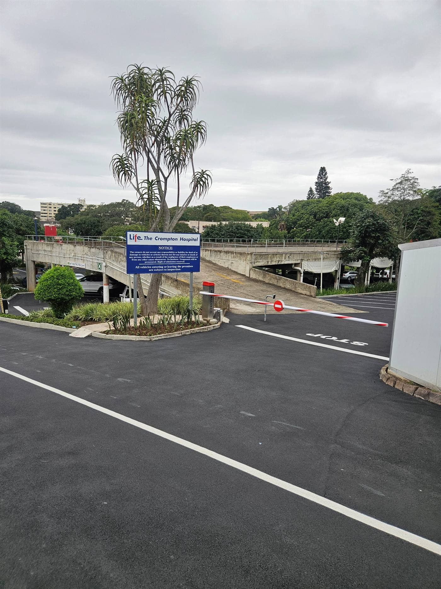
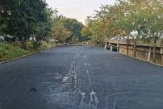
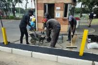
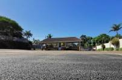
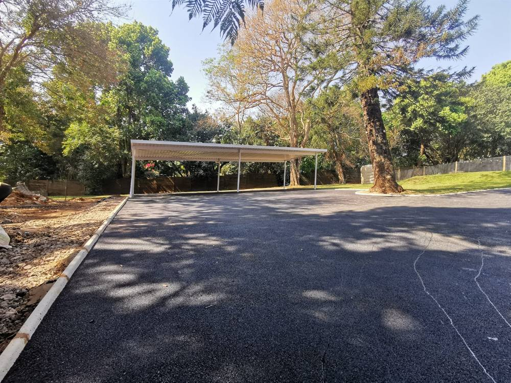

Carpark Asphalting
Professional carpark asphalting, resurfacing and repair services for commercial properties, hospitals, schools and clubs across the Durban Metropolitan area.
- Quality workmanship
- SABS-approved materials
- Experienced team
- Durban Metro
 Crompton Hospital
Crompton HospitalProfessional parking surfaces
Parking areas need an even, durable surface with correct drainage and clearly managed vehicle movement.
SA Asphalt undertakes carpark surfacing, repairs and rehabilitation for commercial and institutional sites, including Crompton Hospital, Westville Hospital and Chelsea School.
- New parking surfaces
- Carpark repairs
- Resurfacing
- Line marking support
Built around the right process
Good surfacing starts with preparation, the correct materials and disciplined workmanship.
Surface preparation
Failed or unstable areas are addressed before the finished layer is installed.
Drainage awareness
Levels and stormwater movement are considered to reduce standing water.
Complete finishing
Repairs, surfacing and line marking can be coordinated as one project.
How we approach the job
Inspect
Identify defects, levels, traffic flow and drainage issues.
Prepare
Remove or repair failed material and establish a sound base.
Surface
Install and compact the asphalt surface.
Mark & hand over
Complete parking markings where required and inspect the site.
SA Asphalt projects





Related services
Ready to discuss your project?
Send us photos, your location and an approximate size. We can review the requirement and arrange the next step.